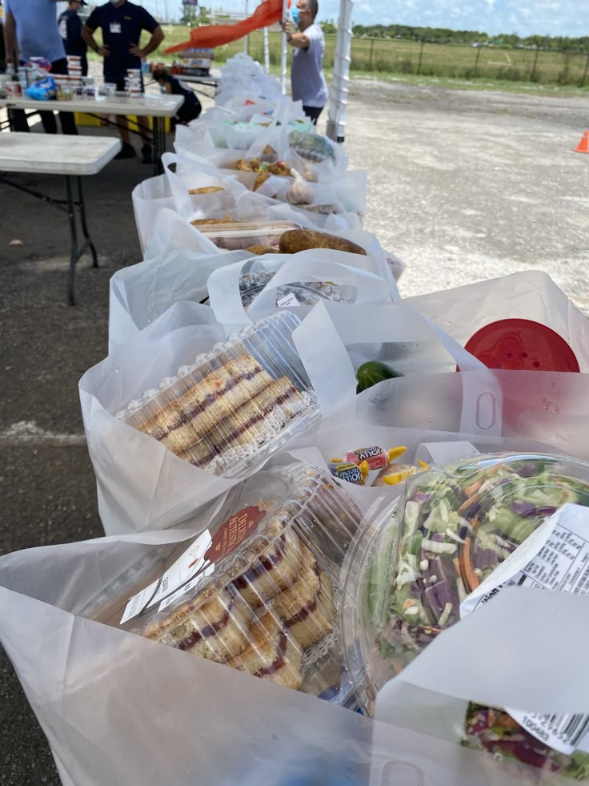
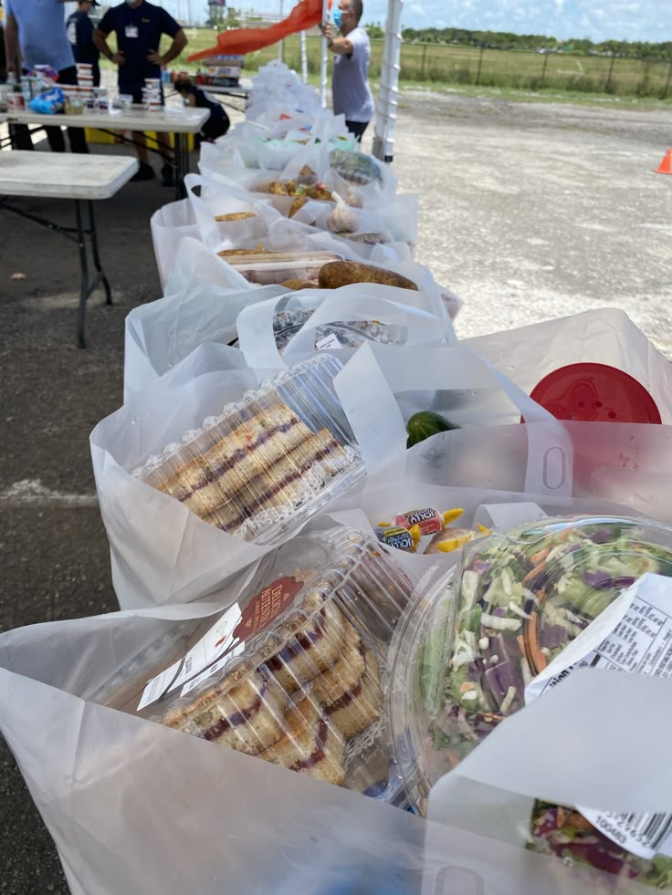

⏳
Respeito ao tempo
O cuidado emocional acontece no ritmo de cada pessoa, com presença e continuidade.
Um espaço de escuta, cuidado e presença.
O cuidado emocional acontece no ritmo de cada pessoa, com presença e continuidade.
Atendimentos que respeitam histórias, contextos e diferentes momentos da vida.

Um espaço seguro, sereno e humano, pensado para acolher sem julgamentos.

O cuidado se constrói na relação, na escuta atenta e no respeito aos limites.
A presença da Yasuragi se estende para além do consultório, em ações comunitárias e projetos sociais.


 


acompanhe nossos conteúdos de bem-estar
@yasuragi.clinic